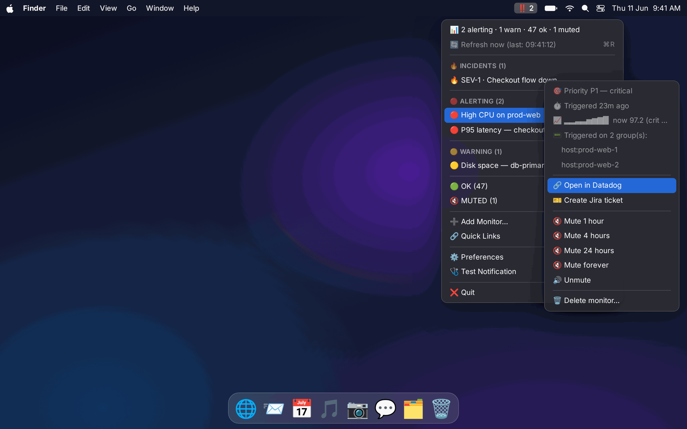
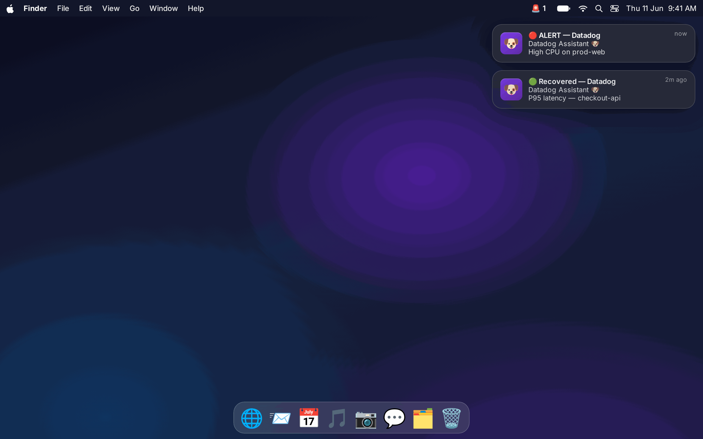
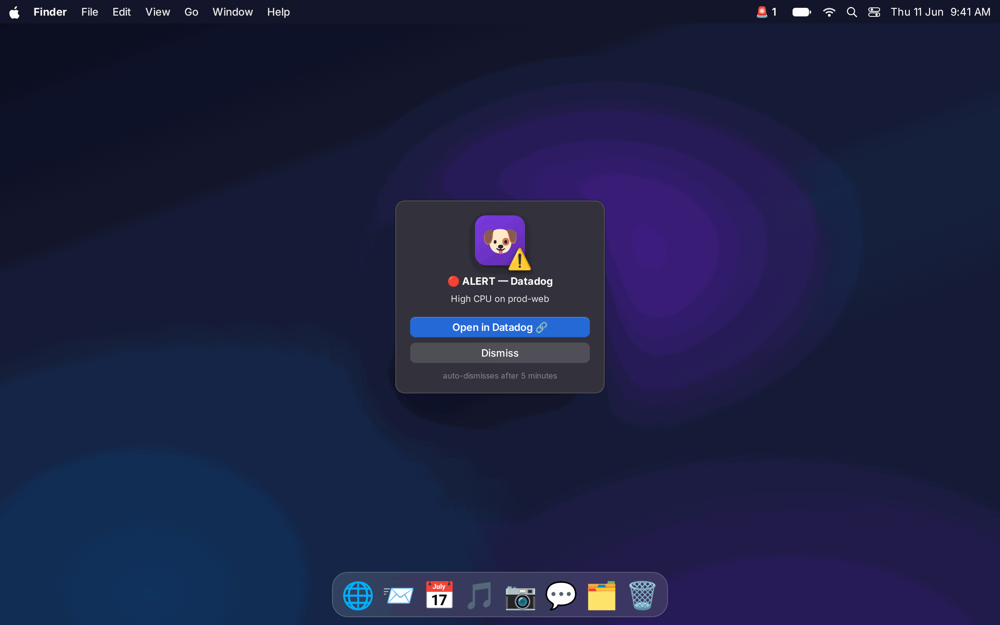
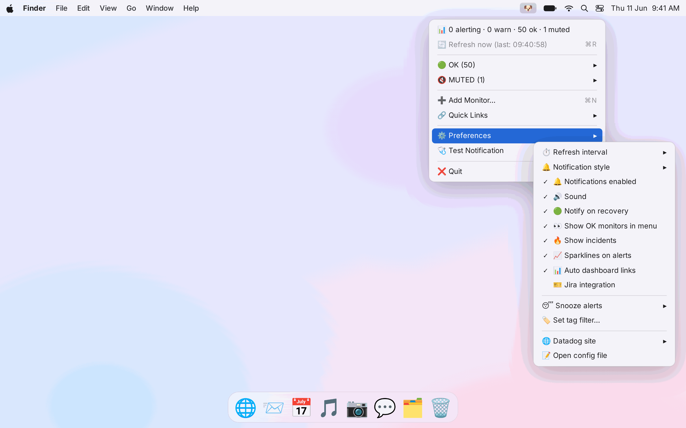
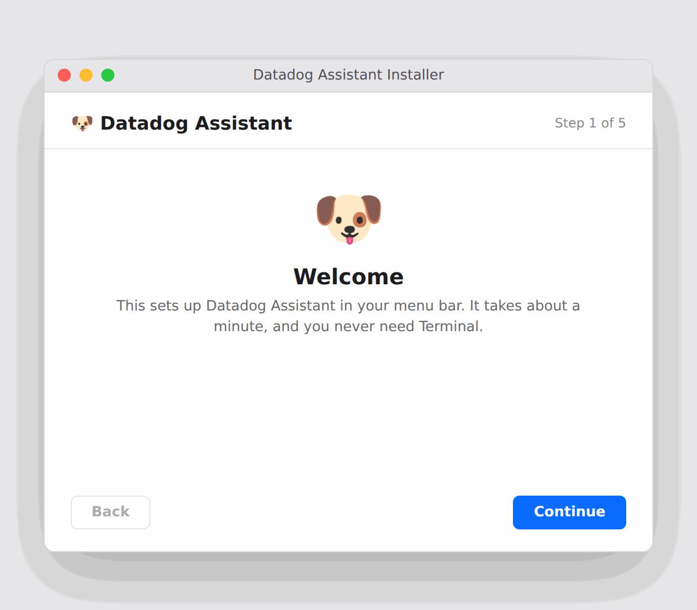
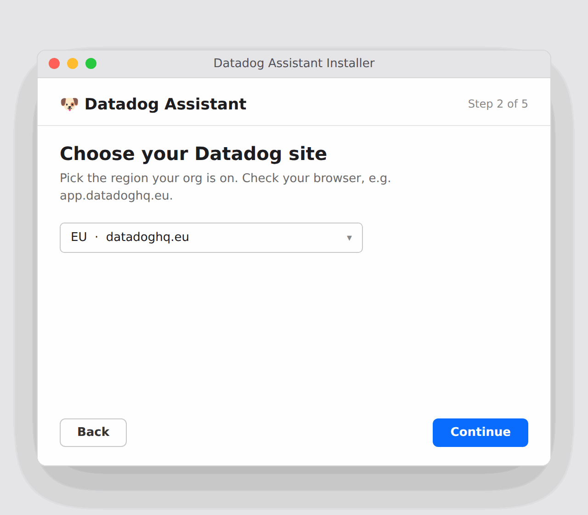
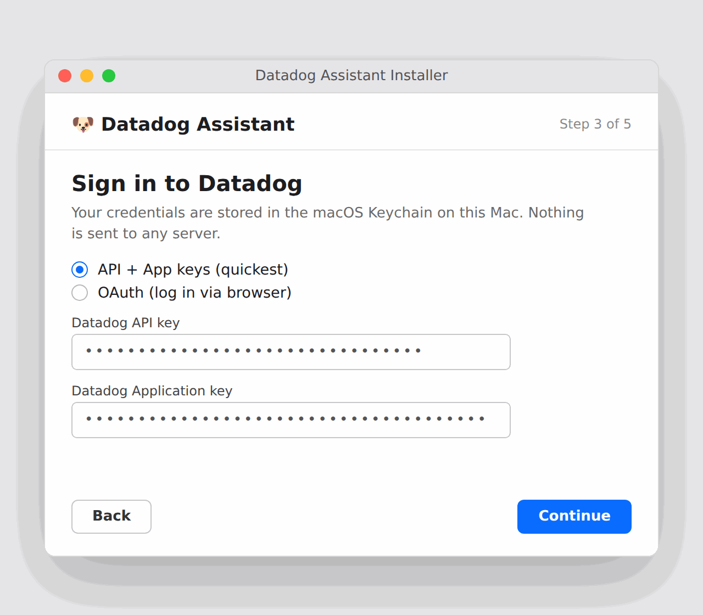
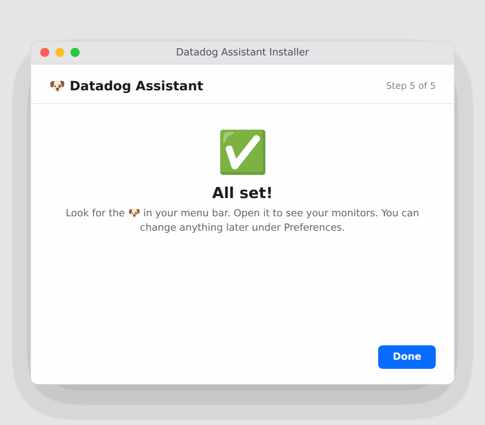

🛑
Impossible to ignore
Banners and sound for every change, plus a modal popup macOS can't silence for the P1s that can't wait.
A small app for your Mac menu bar. It shows every Datadog monitor at a glance and fires an unmissable popup the moment a P1 breaks.

Not technical? Download the app and a simple installer sets it up. A developer? Grab the source and run it your way.
One download. Double click it and a clean installer steps you through your region, your Datadog login, and setup. No Terminal. The 🐶 shows up in your menu bar when it is done.
Download for macOSOne dependency light Python file. Clone it, run the installer script, send a PR. MIT licensed.
git clone https://github.com/mxnyawi/datadog-assistant && ./install.sh
Open the repo
Banners and sound for every change, plus a modal popup macOS can't silence for the P1s that can't wait.
A live sparkline, current value versus threshold, how long it has been firing, and which hosts triggered.
Tells a dead host apart from a quiet monitor, so you only get woken for real breakage.
File a ticket from any alert, or auto create for P1 and P2, with open ticket dedupe.
Active Datadog incidents and your real dashboards, right in the menu.
API keys or OAuth, stored in the macOS Keychain. Never on a server, never in a config file.



Double click the app and a simple installer does the rest. No Terminal, no commands.

Double click the download. The first time, right click then Open to pass the macOS prompt.

Pick your Datadog region. With OAuth it is detected for you.

Paste your keys or use OAuth. Stored in the macOS Keychain, never on a server.

The installer finishes and the dog appears in your menu bar. That is it.
Your Datadog and Jira credentials live in the macOS Keychain on your machine, or your password manager. They are never sent to a server. The app is open source, so you can read exactly what it does.
The app is not signed with a paid Apple certificate, so macOS warns you the first time. Right click the app and choose Open. If macOS still will not open it, go to System Settings, then Privacy and Security, scroll down, and click Open Anyway. You only do this once. You can also build it yourself from source.
No. It is free and MIT licensed. You only need your own Datadog account and API access.
All of them. US1, EU, US3, US5, AP1 and Gov. With OAuth the region is detected automatically.
Put your Datadog monitors where you will actually see them.